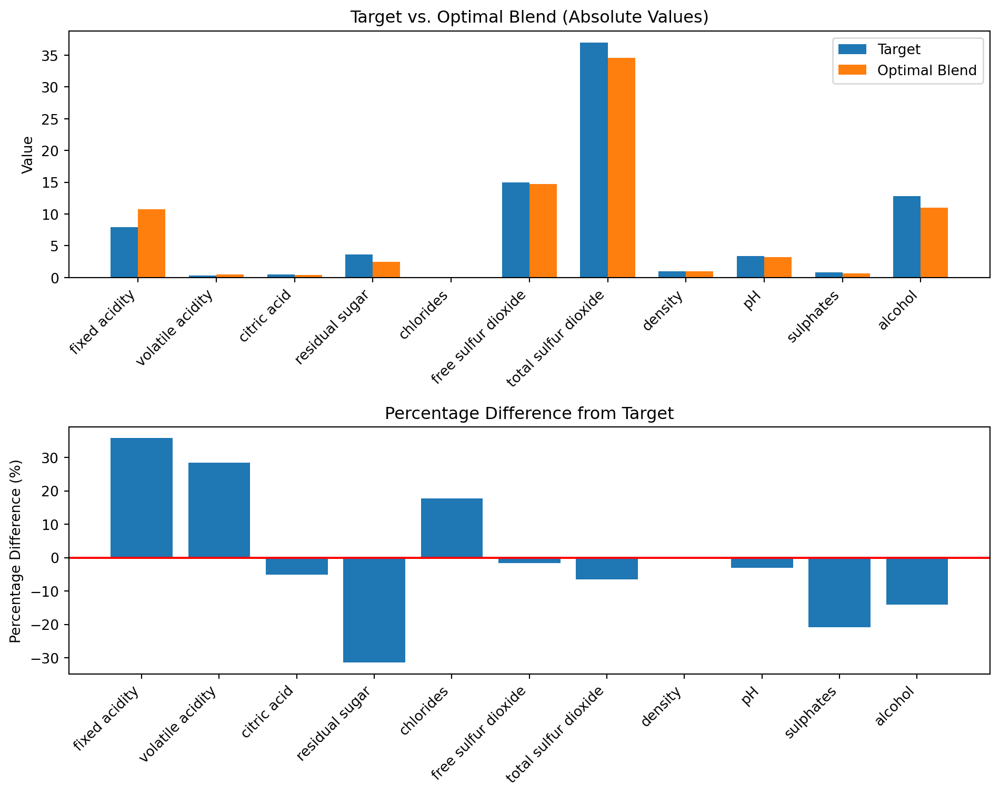

#Import libraries
import numpy as np
import pandas as pd
import matplotlib.pyplot as plt
import cvxpy as cpHomework 3: Convex Sets
Problem 1 (cvx-book 2.12):
Which of the following sets are convex? For each case give the reason(s) why or why not
A slab, i.e., a set of the form \(\{x \in \mathbb{R}^n\, |\, \alpha \leq \mathbf{a}^T \mathbf{x} \leq{\beta}\}\).
A rectangle, i.e., a set of the form \(\{x \in \mathbb{R}^n\, |\, \alpha_i \leq x_i \leq \beta_i, i = 1,\cdots,\, n\}\). A rectangle is sometimes called a hyperrectangle when n > 2.
A wedge, i.e., \(\{ \mathbf{x} \in \mathbb{R}^n\, |\, \mathbf{a_1}^T\mathbf{x} \leq b_1, \mathbf{a}_2^T\mathbf{x}\leq b_2\}\)
The set of points closer to a given point than a given set, i.e., \(\{ \mathbf{x}\, |\, \|\mathbf{x} − \mathbf{x}_0\|^2 \leq \|\mathbf{x} − \mathbf{y}\|^2\) for all \(y \in S\}\) where \(S \subseteq \mathbb{R}^n\).
The set of points closer to one set than another, i.e., \(\{\mathbf{x}\, | \text{dist}(\mathbf{x}, S) \leq \text{dist}(\mathbf{x}, T )\}\), where \(S\), \(T\) \(\subseteq \mathbf{R}^N\), and \(\text{dist}(x, S) = \inf\{\|\mathbf{x} − \mathbf{z}\|^2 | \mathbf{z} \in S\}\).
Solution:
a. This set is called slab, it consists of all points \(\mathbf{x}\) whose dot product with a vector \(\mathbf{a}\) lies between \(\alpha\) and \(\beta\) (\(\alpha \leq \beta\)). Geometrically, it describes the region between two parallel hyperplanes defined by \(\mathbf{a}^T \mathbf{x} = \alpha\) and \(\mathbf{a}^T \mathbf{x} = \beta\).
We can express this set as the intersection of two half-spaces:
\[\{x \in \mathbb{R}^n\, |\, \mathbf{a}^T \mathbf{x} \leq{\beta}\},\] \[\{x \in \mathbb{R}^n\, |\, \mathbf{a}^T \mathbf{x} \geq \alpha \}.\]
Each half-space is convex because if you take any two points in a half-space, any convex combination of those points will also lie in the half-space. Convexity is preserved under intersection. Since the intersection of convex sets is itself convex, it follows that the slab is a convex set (Boyd & Vandenberghe, 2004, p.36).
b. A rectangle (or a hyperrectangle when n > 2) is defined by bounds on each coordinate \(\{x \in \mathbb{R}^n\, |\, \alpha_i \leq x_i \leq \beta_i, i = 1,\cdots,\, n\}\). We can express this set as the intersection of \(2n\) half-spaces:
\[\{x \in \mathbb{R}^n\, |\, x_i \leq \beta_i\},\] \[\{x \in \mathbb{R}^n\, |\, x_i \geq \alpha_i\},\]
for each \(i = 1,\cdots,\, n\).
Each half-space is convex, and since the intersection of convex sets is convex, the rectangle is a convex set (similar to the solution in part (a)). Also, as a polyhedron, it is the intersection of halfspaces and hyperplanes (which are convex), and therefore is convex (Boyd & Vandenberghe, 2004, p.36). Therefore, a rectangle is a convex set.
c. This set is the intersection of two half-spaces:
\[\{ \mathbf{x} \in \mathbb{R}^n\, |\, \mathbf{a_1}^T\mathbf{x} \leq b_1\}, \\\]
\[ \{ \mathbf{x} \in \mathbb{R}^n\, |\, \mathbf{a}_2^T\mathbf{x}\leq b_2\},\]
where \(\mathbf{a_1}, \mathbf{a_2} \in \mathbb{R}^n\) and \(b_1, b_2 \in \mathbb{R}\).
Each half-space is convex, and since the intersection of convex sets is convex, the wedge is a convex set (similar to the solution in part (a)). Also, as a polyhedron, it is the intersection of two halfspaces (which are convex), and therefore is convex (Boyd & Vandenberghe, 2004, p.36). Therefore, a wedge is a convex set.
d. As shown in the example for Euclidean balls (Boyd & Vandenberghe, 2004, p.29), we can rewrite the squared norm as: \(\{ \mathbf{x}\, |\, \|\mathbf{x} − \mathbf{x}_0\|^2 \leq \|\mathbf{x} − \mathbf{y}\|^2\) for all \(y \in S\}\) where \(S \subseteq \mathbb{R}^n\),
\[\|\mathbf{x} − \mathbf{x}_0\|^2 = (\mathbf{x} - \mathbf{x}_0)^T (\mathbf{x} - \mathbf{x}_0) = \mathbf{x}^T\mathbf{x}-2\mathbf{x}^T\mathbf{x}_0+\mathbf{x}_0^T\mathbf{x}_0,\]
\[\|\mathbf{x} − \mathbf{y}\|^2 = (\mathbf{x} - \mathbf{y})^T (\mathbf{x} - \mathbf{y})=\mathbf{x}^T\mathbf{x}-2\mathbf{x}^T\mathbf{y}+\mathbf{y}^T\mathbf{y}.\]
The inequality becomes:
\[\|\mathbf{x} − \mathbf{x}_0\|^2 \leq \|\mathbf{x} − \mathbf{y}\|^2,\]
\[\mathbf{x}^T\mathbf{x}-2\mathbf{x}^T\mathbf{x}_0+\mathbf{x}_0^T\mathbf{x}_0 \leq \mathbf{x}^T\mathbf{x}-2\mathbf{x}^T\mathbf{y}+\mathbf{y}^T\mathbf{y},\] \[2\mathbf{x}^T(\mathbf{y} - \mathbf{x}_0) \leq \mathbf{y}^T\mathbf{y} - \mathbf{x}_0^T\mathbf{x}_0,\] \[\mathbf{x}^T \mathbf{d} \leq \frac{\textbf{||y||}^2 - \textbf{||x0||}^2}{2},\]
for a fixed \(y\in S\), where \(\mathbf{d}=\mathbf{y} - \mathbf{x}_0.\)
This is a linear inequality in \(\mathbf{x}\), it defines a halfspace. The set of points \(\mathbf{x}\) that satisfy the condition for all \(y \in S\) is the intersection of infinitely many halfspaces (one for each \(y \in S\)).
Convexity is preserved under intersection. Since the intersection of convex sets is itself convex, it follows that the described set is convex (Boyd & Vandenberghe, 2004, p.36).
e. We can rewrite the condition as:
\[\text{dist}(\mathbf{x}, S) - \text{dist}(\mathbf{x}, T ) \leq 0,\]
\[\text{inf}_{\mathbf{z} \in S}||\mathbf{x}-\mathbf{z}||^2 - \text{inf}_{\mathbf{w} \in T}||\mathbf{x}-\mathbf{w}||^2 \leq 0,\]
for every \(\mathbf{x}\), there is \(\mathbf{z} \in S\) such that \(||\mathbf{x}-\mathbf{z}||^2 \leq ||\mathbf{x}-\mathbf{w}||^2\) for all \(\mathbf{w} \in T\).
The distance function \(\text{dist}(\mathbf{x}, S)\) is convex if \(S\) is a convex set (Boyd & Vandenberghe, 2004, p.36). Similarly, \(\text{dist}(\mathbf{x}, T)\) is convex if \(T\) is convex.
But this is the difference of two convex functions. Therefore, the set defined by this inequality is not necessarily convex. For example convex case, if we consider \(S=\{(0,0)\}, T=\{(2,0)\}\) in \(\mathbb{R}^2\), the condition becomes: \[||\mathbb{x} - (0,0)|| \leq ||\mathbb{x}-(2,0)||,\]
\[x_1^2 + x_2^2 \leq (x_1-2)^2+x_2^2,\]
\[x_1 \leq 1,\]
which defines a halfspace, which is convex.
But if \(S\) and \(T\) are more complex or non-convex, the set can become non-convex. For example, if \(S\) is the line segment from (0,0) to (0,2) and \(T\) is the line segment from (2,0) to (2,2), the set of points closer to \(S\) than to \(T\) can be non-convex.
As a result, without additional assumptions about \(S\) and \(T\), the set is not guaranteed to be convex.
Problem 2 (cvx-book 2.15):
Some sets of probability distributions. Let \(x\) be a real-valued random variable with probability distribution \(\mathbf{prob}(x = a_i) = p_i, i = 1 , . . . , n\), where \(a_1 < a_2 <· · · < a_n\). Of course \(p \in \mathbb{R}^n\) lies in the standard probability simplex \(P = \{\mathbf{p} | \mathbf{1}^T \mathbf{p} = 1, \mathbf{p} \succeq 0\}\). Which of the following conditions are convex in \(\mathbf{p}\)? (That is, for which of the following conditions is the set of \(\mathbf{p} \in P\) that satisfy the condition convex?) For each case give the reason(s) why or why not.
The set of all \(\mathbf{p}\) where the expectation of the function \(f(x)\) is between two limits: \(\alpha \leq Ef(x) \leq \beta\), \(Ef(x) = \sum_{i=1}^n p_i f(a_i)\). Here \(f(x)\) is a function from \(\mathbb{R}\) to \(\mathbb{R}\).
The set of all \(\mathbf{p}\) such that the probability that \(\mathbf{prob}(x > \alpha) \leq \beta\)
The set of all \(\mathbf{p}\) such that the expectation of \(|x|^3\) is greater than a given constant \(\alpha\) times the expectation of \(|x|\): \(E|x^3| \leq \alpha E|x|\)
The set of all \(\mathbf{p}\) such that the expectation of \(x^2\) is less than a given constant \(\alpha\): \(Ex^2 \leq \alpha\)
Solution:
a. \(a_i\) are fixed values and \(f\) is a given function, each \(f(a_i)\) is a constant. As a result, we can rewrite and get a linear function of \(\mathbf{p}\): \[Ef(x) = p_1 f(a_1) + p_2 f(a_2) + ... + p_n f(a_n) = \mathbf{f}^T \mathbf{p},\] the condition becomes: \[\alpha \leq \mathbf{f}^T \mathbf{p} \leq \beta,\] the set we are examining: \[\{\mathbf{p} \in P \, |\, \alpha \leq \mathbf{f}^T \mathbf{p} \leq \beta \},\] where \(P = \{\mathbf{p} | \mathbf{1}^T \mathbf{p} = 1, \mathbf{p} \succeq 0\}\) is the probability simplex.
First, let’s check if \(P\) is convex:
\(\mathbf{1}^T \mathbf{p} = 1\) is a linear equality,
\(p_i \geq 0\) for \(i = 1, ..., n\) is a linear inequality.
Section 2.2.4 on “Polyhedra” (Boyd & Vandenberghe, 2004, p.31) states that a polyhedron is defined as the solution set of a finite number of linear equalities and inequalities, is convex. The probability simplex fits this description exactly (Example 2.5, Boyd & Vandenberghe, 2004, p.33), so \(P\) is convex.
Next, we analyze the constraints \(\alpha \leq \mathbf{f}^T \mathbf{p} \leq \beta:\)
- \(\mathbf{f}^T \mathbf{p} \geq \alpha\) is a linear inequality in \(\mathbf{p}\), it defines a half-space,
- \(\mathbf{f}^T \mathbf{p} \leq \beta\) is another linear inequality in \(\mathbf{p}\), it defines another half-space.
Our set is the the intersection of:
The convex set \(P\),
The half-space \(\{\mathbf{p} | \mathbf{f}^T \mathbf{p} \geq \alpha\}\),
The half-space \(\{\mathbf{p} | \mathbf{f}^T \mathbf{p} \leq \beta\}\).
Convexity is preserved under intersection. Since the intersection of convex sets is itself convex. This extends to any finite number of convex sets. Since \(P\) and the two half-spaces are convex, it follows that their intersection is convex (Boyd & Vandenberghe, 2004, p.36).
b. Let’s express the probability as the sum of probabilities where \(x > \alpha\) (we get a linear function of p): \[\mathbf{prob}(x > \alpha) = \sum_{a_i > \alpha} p_i,\]
where \(i = k\) , . . . , \(n\), \(k\) is a smallest index such that \(a_k > \alpha\).
Thus, we get a linear inequality in \(\mathbf{p}\) which defines a halfspace:
\[\{\mathbf{p} \in P \, |\, \sum_{a_i > \alpha} p_i \leq \beta \}\].
As a result, the probability simplex \(P\) is convex, the halfspace is convex (Boyd & Vandenberghe, 2004, p.27), their intersection results in a convex set (Boyd & Vandenberghe, 2004, p.36).
c. We can rewrite the inequality as (Yang, 2019, p.30):
\[E|x^3| \leq \alpha E|x|,\] \[\sum_{i=1}^n p_i |a_i|^3 \leq \alpha \sum_{i=1}^n p_i |a_i|.\]
Both sides are linear functions of \(\mathbf{p}\), we can rewrite the above inequality as a linear inequality in \(\mathbf{p}\):
\[\sum_{i=1}^n p_i (|a_i|^3 - \alpha |a_i|) \leq 0,\] where \(v_i = |a_i|^3 - \alpha |a_i|\) are constants. The final linear inequality to consider:
\[\{\mathbf{p} \in P \, |\,\mathbf{v}^T \mathbf{p} \leq 0 \}.\]
As in the previous problems, the probability simplex \(P\) is convex, the halfspace is convex (Boyd & Vandenberghe, 2004, p.27), their intersection results in a convex set (Boyd & Vandenberghe, 2004, p.36).
d. We can rewrite the inequality as (Yang, 2019, p.30): \[Ex^2 \leq \alpha,\]
\[\sum_{i=1}^n p_i a_i^2 \leq \alpha, \]
\[\{\mathbf{p} \in P \, |\,\mathbf{a}^T \mathbf{p} \leq \alpha \},\]
As in the previous problems, the probability simplex \(P\) is convex, the halfspace is convex (Boyd & Vandenberghe, 2004, p.27), their intersection results in a convex set (Boyd & Vandenberghe, 2004, p.36).
Problem 3: Bounded Value Least Squares for Wine Mixing
We have seen several examples so far in the couse where we would like to have inequality constraints on the decision variable for our least squares problem, for example to prevent non-sensical solutions like spending a negative amount of money on advertising, limiting the total investment in certain types of assets, or perhaps bounding the value of a statistical coefficient to a certain range. Non-negative least squares is a type of least squares problem where the decision variables \(\mathbf{x}\geq 0\), and Bounded-Value Least Squares allows for more general constraints.
This type of least-squares problem needs to be solved algorithmically, and we will use it to get our first practice using the CVX software package. You should install CVXPY, CVXR, or a flavor of CVX compatible with whatever software you are using to solve the problem and use CVX to solve this problem.
The problem is one of finding a mixture of wines which achieves certain chemical characteristics. I have attached a dataset which contains data on the chemical composition of 6 different wines (the dataset originates from kaggle but is reduced for our purposes). Each wine is described according to 11 chemical characteristics, including alcohol, residual sugar, chlorides, etc. I have also provided data for the chemical composition for a target wine.
The goal of this problem is to find the blend of wines which has chemical characteristics closest to the target wine.
Concretely, you are solving for weights \(\mathbf{p}\). The concentration of chemical \(i\) in wine \(j\) is given by the matrix \(C_{ij}\), and the concentration in the blended wine is: \[ c_{blend,i} = \sum_{j=1}^6 C_{ij} p_j, \] so that the overall concentration vector in the blend satisfies: \[ \mathbf{c}_{blend} = C\mathbf{p} \]
The vector \(\mathbf{p}\) is a discrete probability distribution, meaning that all entries are non-negative and must sum to \(1\) (you can’t add negative wine). The range of each chemical varies greatly, so our objective function should incorporate a penalty that is weighted according to the magnitude of the value in the target function:
\[ \min_{\mathbf{p}} \sum_{i=1}^{11} \left(\frac{c_i-c_{blend,_i}}{c_i}\right)^2 \]
Implement this least squares optimization problem using CVX and determine the optimal blend of wines to match the target.
Solution:
We have the following information:
Wine data: A matrix C (size 11x6), where \(C_{ij}\) is the concentration of chemical \(i\) in wine \(j\). The 11 chemicals are: fixed acidity, volatile acidity, citric acid, residual sugar, chlorides, free sulfur dioxide, total sulfur dioxide, density, pH, sulphates, and alcohol. Each of the 6 columns corresponds to a different wine.
Target data: A vector \(c\) of length 11, representing the desired chemical composition of the blended wine.
A 6-dimensional probability vector \(\mathbf{p}\) containing blend weights, where \(\mathbf{p}_j\) is the proportion of wine \(j\) in the final blend. The vector satisfies the following constraints (weights are non-negative, and they sum to 1): \[\mathbf{p} \geq 0, \sum_{j=1}^6 p_j = 1,\] meaning that we cannot have negative proportions of wine, and the total blend proportions must sum to 1.
The overall concentration vector in the blend: \(\mathbf{c}_{blend} = C\mathbf{p}\), where a vector \(\mathbf{c}_{blend}\) is a vector of length 11, and \(c_{blend,i} = \sum_{j=1}^6 C_{ij} p_j\).
The goal is to minimize the weighted sum of squared differences between the target wine and the blended wine: \[ \min_{\mathbf{p}} \sum_{i=1}^{11} \left(\frac{c_i-c_{blend,i}}{c_i}\right)^2, \] where \(c_i\) is the target concentration of chemical \(c_i\).
First, we import the datasets containing the chemical compositions of six wines and the target wine from GitHub. We need to transform the data to the required numpy arrays for consistency with the equation \(\mathbf{c}_{blend} = C\mathbf{p}\). The wine data is stored in a DataFrame where rows represent wines and columns represent chemical properties (size 6x11). To match our mathematical formulation above, we transpose the DataFrame so that rows represent chemicals and columns represent wines, obtaining a 11x6 matrix \(C\). The target data is stored as a single-row DataFrame. We extract the values and flatten it into a 1D array \(c_{blend}\) of size 11.
We also define \(\mathbf{p}\) as a 6-dimensional probability vector using cp.Variable(), ensuring it meets the non-negativity and sum-to-one constraints.
In Python, we directly implemented the formula from the minimization problem. We first compute the difference between the target and blended compositions (residual). Next, we normalize it by dividing each residual by the target value (element-wise). The optimization objective directly implements the sum of squared weighted residuals. We impose the constraints, and the optimization is solved using cp.Problem(). Due to floating-point precision, small negative weights are clipped to zero by np.maximum(optimal_p, 0).
The solver returns the optimal proportions of the six wines in the blend. We also add a verification that the constraints are satisfied (weights sum to 1 and are non-negative). The optimal blend comprises 61.4% Wine 1, 34.7% Wine 3, and 3.9% Wine 6, with Wines 2, 4, and 5 excluded (0%) and an objective value of 0.4097 (this isn’t zero, indicating the blend isn’t a perfect match). Wine 1 and 3 contribute 96.1% of the blend (61.4% from Wine 1 and 34.7% from Wine 3). These wines may have chemical compositions most similar to the target wine, making them optimal choices. Wines 2, 4, and 5 contribute nearly nothing (~0%). Their chemical properties might deviate significantly from the target (e.g., Wine 2’s volatile acidity of 0.745 vs. target 0.35). Wine 6 contributes a ~3.9%. This wine might help adjust specific chemical properties (such as pH or sulphates).
The plot below shows the absolute differences between the target and blended wine across the 11 chemical properties. A small absolute difference means a chemical characteristic was well-matched. A large difference suggests the available wines could not exactly replicate the target composition. The percentage difference plot shows how much the blended wine deviates from the target in relative terms. This helps identify chemicals that are overrepresented or underrepresented in the final blend.
Based on these plots, we can conclude that density, chlorides, and total sulfur dioxide are well-matched (near 0% difference), but fixed acidity (+35%) is higher due to Wines 1 and 3’s values (12.6, 7.8) exceeding the target (7.9). Residual sugar (-30%) and alcohol (-15%) are lower because the selected wines undershoot the target (e.g., 2.8, 1.9, 1.9 vs. 3.6 for sugar). Some chemical properties cannot be perfectly replicated using the available six wines. The optimizer finds the best possible trade-off while maintaining non-negative proportions.
#Load dataset from Github
data_1 = pd.read_csv('https://media.githubusercontent.com/media/georgehagstrom/DATA609Spring2025/refs/heads/main/website/assignments/labs/labData/wine_data.csv')
data_2 = pd.read_csv('https://media.githubusercontent.com/media/georgehagstrom/DATA609Spring2025/refs/heads/main/website/assignments/labs/labData/target.csv')
data_1.head(), data_1.describe(),data_1.info(), data_2.head(), data_2.describe(),data_2.info()<class 'pandas.core.frame.DataFrame'>
RangeIndex: 6 entries, 0 to 5
Data columns (total 11 columns):
# Column Non-Null Count Dtype
--- ------ -------------- -----
0 fixed acidity 6 non-null float64
1 volatile acidity 6 non-null float64
2 citric acid 6 non-null float64
3 residual sugar 6 non-null float64
4 chlorides 6 non-null float64
5 free sulfur dioxide 6 non-null int64
6 total sulfur dioxide 6 non-null int64
7 density 6 non-null float64
8 pH 6 non-null float64
9 sulphates 6 non-null float64
10 alcohol 6 non-null float64
dtypes: float64(9), int64(2)
memory usage: 660.0 bytes
<class 'pandas.core.frame.DataFrame'>
RangeIndex: 1 entries, 0 to 0
Data columns (total 11 columns):
# Column Non-Null Count Dtype
--- ------ -------------- -----
0 fixed acidity 1 non-null float64
1 volatile acidity 1 non-null float64
2 citric acid 1 non-null float64
3 residual sugar 1 non-null float64
4 chlorides 1 non-null float64
5 free sulfur dioxide 1 non-null int64
6 total sulfur dioxide 1 non-null int64
7 density 1 non-null float64
8 pH 1 non-null float64
9 sulphates 1 non-null float64
10 alcohol 1 non-null float64
dtypes: float64(9), int64(2)
memory usage: 220.0 bytes( fixed acidity volatile acidity citric acid residual sugar chlorides \
0 12.6 0.410 0.54 2.8 0.103
1 8.4 0.745 0.11 1.9 0.090
2 7.8 0.500 0.30 1.9 0.075
3 9.2 0.755 0.18 2.2 0.148
4 6.7 0.620 0.21 1.9 0.079
free sulfur dioxide total sulfur dioxide density pH sulphates \
0 19 41 0.99939 3.21 0.76
1 16 63 0.99650 3.19 0.82
2 8 22 0.99590 3.31 0.56
3 10 103 0.99690 2.87 1.36
4 8 62 0.99700 3.52 0.58
alcohol
0 11.3
1 9.6
2 10.4
3 10.2
4 9.3 ,
fixed acidity volatile acidity citric acid residual sugar \
count 6.000000 6.000000 6.00000 6.000000
mean 8.650000 0.608333 0.22500 2.166667
std 2.125794 0.135302 0.18251 0.355903
min 6.700000 0.410000 0.01000 1.900000
25% 7.350000 0.530000 0.12750 1.900000
50% 8.100000 0.620000 0.19500 2.050000
75% 9.000000 0.713750 0.27750 2.275000
max 12.600000 0.755000 0.54000 2.800000
chlorides free sulfur dioxide total sulfur dioxide density \
count 6.000000 6.000000 6.000000 6.000000
mean 0.093333 11.500000 56.166667 0.996502
std 0.029790 4.806246 27.476657 0.001961
min 0.065000 8.000000 22.000000 0.993320
25% 0.076000 8.000000 42.250000 0.996050
50% 0.084500 9.000000 54.000000 0.996700
75% 0.099750 14.500000 62.750000 0.996975
max 0.148000 19.000000 103.000000 0.999390
pH sulphates alcohol
count 6.000000 6.000000 6.000000
mean 3.236667 0.765000 10.433333
std 0.214445 0.315706 0.964711
min 2.870000 0.510000 9.300000
25% 3.195000 0.565000 9.750000
50% 3.260000 0.670000 10.300000
75% 3.317500 0.805000 11.075000
max 3.520000 1.360000 11.800000 ,
None,
fixed acidity volatile acidity citric acid residual sugar chlorides \
0 7.9 0.35 0.46 3.6 0.078
free sulfur dioxide total sulfur dioxide density pH sulphates \
0 15 37 0.9973 3.35 0.86
alcohol
0 12.8 ,
fixed acidity volatile acidity citric acid residual sugar \
count 1.0 1.00 1.00 1.0
mean 7.9 0.35 0.46 3.6
std NaN NaN NaN NaN
min 7.9 0.35 0.46 3.6
25% 7.9 0.35 0.46 3.6
50% 7.9 0.35 0.46 3.6
75% 7.9 0.35 0.46 3.6
max 7.9 0.35 0.46 3.6
chlorides free sulfur dioxide total sulfur dioxide density pH \
count 1.000 1.0 1.0 1.0000 1.00
mean 0.078 15.0 37.0 0.9973 3.35
std NaN NaN NaN NaN NaN
min 0.078 15.0 37.0 0.9973 3.35
25% 0.078 15.0 37.0 0.9973 3.35
50% 0.078 15.0 37.0 0.9973 3.35
75% 0.078 15.0 37.0 0.9973 3.35
max 0.078 15.0 37.0 0.9973 3.35
sulphates alcohol
count 1.00 1.0
mean 0.86 12.8
std NaN NaN
min 0.86 12.8
25% 0.86 12.8
50% 0.86 12.8
75% 0.86 12.8
max 0.86 12.8 ,
None)#To numpy arrays for efficient computation.
wine_df = data_1.copy()
target_df = data_2.copy()
#C matrix 11 x 6
c_matrix = wine_df.values.T
#c vector size 11, the target wine’s chemical concentrations
c_vector = target_df.values.flatten()
#Optimization variable, 6 blend weights to determine
p = cp.Variable(c_matrix.shape[1])
print(f"C matrix shape: {c_matrix.shape}")
print(f"c vector shape: {c_vector.shape}")
print(f"Scalar optimization variable shape: {p.shape}")
#Constraints
constraints = [p >= 0, cp.sum(p) == 1]
#From the minimization formula
#Weighted residual, residual (difference between target and blended concentrations) element-wise division by target values
objective = cp.sum(cp.square((c_vector - c_matrix @ p) / c_vector))
#Solve, Minimize the sum of squared weighted residuals
problem = cp.Problem(cp.Minimize(objective), constraints)
problem.solve()
#Results
optimal_p = p.value
#Corrects tiny negative weights (numerical artifacts)
optimal_p = np.maximum(optimal_p, 0)
#Resulting blend
optimal_blend = c_matrix @ optimal_p
#Print results
print("\nOptimal objective value (minimized sum of squared weighted errors):", round(problem.value, 6))
print("Optimal blend weights (p):", optimal_p.round(4))
print("\nThe resulting blend chemical composition:", optimal_blend.round(4))
print("Target chemical composition:", c_vector.round(4))
print("\nSum of weights:", np.sum(optimal_p)) # Should be very close to 1
print("All weights non-negative:", np.all(optimal_p >= 0))C matrix shape: (11, 6)
c vector shape: (11,)
Scalar optimization variable shape: (6,)
Optimal objective value (minimized sum of squared weighted errors): 0.409707
Optimal blend weights (p): [0.6145 0. 0.3466 0. 0. 0.039 ]
The resulting blend chemical composition: [10.726 0.4494 0.4362 2.4686 0.0918 14.759 34.6096 0.9979 3.2489
0.6809 11.0076]
Target chemical composition: [ 7.9 0.35 0.46 3.6 0.078 15. 37. 0.9973 3.35
0.86 12.8 ]
Sum of weights: 1.0
All weights non-negative: True#Target vs. blend
chemicals = wine_df.columns
x = np.arange(len(chemicals))
width = 0.35
fig, (ax1, ax2) = plt.subplots(2, 1, figsize=(10, 8))
#Absolute values
ax1.bar(x - width/2, c_vector, width, label='Target')
ax1.bar(x + width/2, optimal_blend, width, label='Optimal Blend')
ax1.set_ylabel('Value')
ax1.set_title('Target vs. Optimal Blend (Absolute Values)')
ax1.set_xticks(x)
ax1.set_xticklabels(chemicals, rotation=45, ha='right')
ax1.legend()
#Percentage differences
perc_diff = (optimal_blend - c_vector) / c_vector * 100
ax2.bar(x, perc_diff)
ax2.set_ylabel('Percentage Difference (%)')
ax2.set_title('Percentage Difference from Target')
ax2.set_xticks(x)
ax2.set_xticklabels(chemicals, rotation=45, ha='right')
ax2.axhline(0, color='r', linestyle='-')
plt.tight_layout()
plt.show()
plt.tight_layout()
plt.show()
<Figure size 672x480 with 0 Axes>Reference
Yang, X.S. (2019). Introduction to algorithms for data mining and machine learning. Academic Press. https://doi.org/10.1016/c2018-0-02034-4
Boyd, S., & Vandenberghe, L. (2004). Convex optimization. Cambridge University Press. https://doi.org/10.1017/CBO9780511804441
What is CVXPY? -. (n.d.). https://www.cvxpy.org/tutorial/intro/index.html
Skinner, D. (2023, February 25). Convex Linear Optimization with CVXPY - Dylan Skinner - Medium. Medium. https://medium.com/@dylanskinner65/convex-linear-optimization-with-cvxpy-5fa1024254ff